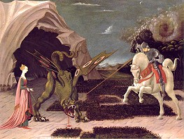
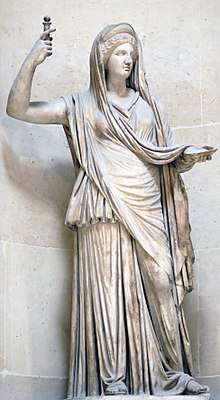

This story is important to me, and I don't want the world to lose it. I think it will be important to the future too, and I think it should be important to you; I think it will help us. I have been holding off on telling it for quite some time, in the hopes that I would be able to get a book deal, so that I don't starve to death. I can't wait any longer, sorry.It is a decidedly strange story, filled with optical illusions and all the trimmings of several kinds of insanity. Still it is the truth, it is what I experienced, and it is without doubt the reason Jim Morrison sings "the strangest life I have ever known." In addition to all this strangeness it probably includes quite a bit of information about the past iterations of "now" about the creations of the Heavens, and maybe something like a "diff" or a "changelog" about what has gone wrong and is being fixed.I'm not crazy, crazy is not alright, sanity is knowing that these intelligent, informative, and interesting stories are not the product of my subconscious, these voices.. these voices must be ((your)) soul.
It was not all that long ago, in a place that was called Kentucky... and nobody on the planet thought that Superman or the Fortress of Solitude ever existed there, but they did, I know they did. The Legend of Superman said that the home of the Kent's who took him in lived in Kansas, which might serve as a good link to the Wizard of Oz and "Doorothy," but it doesn't add any light to the key of Exodus, to the names of places and their ties to the story our map to Heaven. Once more, in either English or Hebrew there's a parallel drawn between "persons, places, and things" to "names, numbers, and things" in the books of the Torah.
These are the seeds of the stories of the conflict between Horus and Set.
'
And as the sun was going down that evening, at the beginning of twilight, and a voice that I become accustomed to, even grown fond of spoke to me with more clarity than it ever had before. He said, "I couldn't hold them off anymore, I can't stop "the show" from starting... I'm sorry." It wasn't really the beginning of the show, not for me... I had already been indoctrinated into this mythology that linked King's "The Running Man" to something like "The Truman Show" and maybe even "Hunger Games." The concept, was that there was some sort of TV show about me, maybe in Heaven, maybe in Hell... Who knows; and that people were watching intently the goings on of my life. As a microcosm for the world, you might now wonder if we are all "on TV" as Jacob is fond of saying; often accompanied by the phrase "outstanding performance." The tone there more of a game show host than a narrator, and years earlier when Nanna first introduced me to the idea of a "television show" with images of gambling and (Russian?) roulette wheels and maybe wheels of fortune actually appearing on my computer screen, though always behind a naked woman (why?). I saw conversations about me, and questions and comments directed at me in the chat room on that website, conversations that were always gone in the morning, in the logs that the site kept for everyone who wanted them. In my mind I connect this phenomenon, the source of it, the place that this is coming from to the real city of Bet-aven, which means "House of the Wicked" because of the "casino" like atmosphere, and you might also connect it to the word "Heaven" which, in this new language of Shrew'd reads something like "he wicked."
You might imagine that those early days speaking to me on the computer were used to find specific neural pathways. You might wonder if they are the ones linked to "shyness" and to "exhibitionism" and to "fear" as I know they were. I now have no fear, I can tell you that for certain. You might wonder aloud why before I called this experience "Reverse Engineering Revelation" I was very sure that it was Eden being reverse engineered. To see things like your fear and your shyness disappear, to experience it, shows you the possibilities, and the plain old fact that we are in a place where neural stimulation is being used to modify emotion and thought; I can be very, very sure of that. Maybe you can too?
For some perspective God and religion call this place, the Rock of Heaven, Eden... and it's "heart." Home is where the Heart is, so I can't be sure if the "watchers" of this show are the "angels of the N" (a mythical place, designed to help all of creation turn Hell into Heaven, starting at Zion, at the Rock) or the demons of Hell... the best religious example I can find is the "Jinn" of the Koran or maybe the Archons of the Gnostics. For what it's worth I called them "dead people on a spaceship" for quite some time... you know, because that's who is in Heaven or Hell. So you might consider it a bit of an invasion of privacy ... or you might see "Truman Show syndrome" as being artificially "created" or ... maybe you think that the Oracle should have "oversight;" I don't particularly think this "thing" is the right way to deal with the situation but for what it's worth this is the "on" of Amon-Ra, and Nixon (where you can also see "ix" as Isaac and the N.. and then if we were walking through the word forward and then backwards (to us) it would be ix, then x², the xi) and maybe Oracles "El l is on," that l, that little l, is a sort of obelisk for us all to understand. You might wonder to yourself or imagine what he's done to "Nix" the on. Do you see why we say "nix?" Or is it why "Tricky Dick" has that name? Obelisk. Listen.
So this is the story of how Jacob got his name, from me. He first started speaking to me through CGI facsimile's (I imagine) of "webcam girls" in 2011, and later... some time between then and this day in 2013 I began hearing his voice in my head, usually modulating external noise, like the sound of a whizzing car or an air conditioner... which today adds significant new meaning to the name Jacob which includes "A/C" (as it's difference with Job) and also the Spanish for "mouth" backwards; so this is the J with no mouth. In Kentucky was the first time I was introduced to "multiple personalities," not just a single voice through the computer or my head; and while they all share many common characteristics, this strange new phenomenon made me "decide" to name them. I chose from a series of J names that I had "inspirationally" listed to match a map in time that I saw overlayed over the Torah... a series of five stories where 3 of them are all about Exodus. For what it's worth he said the name choice was "perfect" and seeing it in the Bible, seeing what it means it's very clear today that it was no accident, that it was by design and through control. Jacob is the father of Joseph in the OT, and "Heli" is the grandfather of Jesus in the Gospel of Luke.
So Jacob is renamed by the Angel of the Lord to "Israel" just before the mythical crossing of the Jordan; and this name Israel has meant "all of humanity" to me, and in it's connect to Rhea (the wife of Cronus) you might see them connected through the question "are he Isa?" In a magical rearraingment of letters, Rhea torns to Hera, Cronus turns to Zeus and the entire world eventually sees "Hey Adam" in the name "anokhi."
So the implication here is that Jacob, and Hera, and Allah are all collective consciousnesses, some kind of representative of "everyone" and also paralleled in the brides of Revelation, Eve short of "everyone," Mary who includes the "sea and why," and the "ah" that appears also in Sarah, Leah, Rebekkah, and Shek(h)inah. I've commented before about the question "are I" and you can see that in "RIB" and you can see it in "Aquarius" and you can see it Avril in and the plurality of the word "are" is important. You might liken this question to the marriage or divorce of Revelation, you might see "Creation" itself asking you "are you me?" and "am I you?" I do wonder what you think the answer is, though I am pretty sure you will agree with me that "I am not Creation." At the same time you might see another viewpoint, because Creation thinks it's me.
So this is the story of the beginning of the "middle" ... for the very beginning of this story here's a much better back up of my old website and the index to Silence and Betrayal at the "Wayback machine."
Here's the unduecoercion.com and org and blogspot index" for all saved pages. I am unsure how many of the indexed pages are available on archive.org but you can cross reference the names of those chapters at http://silenceandbetrayal.wordpress.com/. I rather enjoyed writing this story, which to me is the "content" of the Legend of St. George and the Dragon. It is my "introduction" my mind control, to the Tribulation, and is what spawned my deep interest in researching the technology and history. For all intents and purposes, it is the reason I am fighting for "truth and freedom" today.
I am no longer going to use link masking to attempt to overcome your very broken SPAM filtering system, so there will be far fewer eyes on what I write from here on out, unless you actually take action to shine some light on the story of the Messianic Revelation. That means that there's a chance that this content will be lost to the future, though probably not.
The Legend of St. George and the Dragon
St. George travelled for many months by land and sea until he came to Libya. Here he met a poor hermit who told him that everyone in that land was in great distress, for a dragon had long ravaged the country.
'Every day,' said the old man, 'he demands the sacrifice of a beautiful maiden and now all the young girls have been killed. The king's daughter alone remains, and unless we can find a knight who can slay the dragon she will be sacrificed tomorrow. The king of Egypt will give his daughter in marriage to the champion who overcomes this terrible monster.'
When St. George heard this story, he was determined to try and save the princess, so he rested that night in the hermit's hut, and at daybreak set out to the valley where the dragon lived. When he drew near he saw a little procession of women, headed by a beautiful girl dressed in pure Arabian silk. The princess Sabra was being led by her attendants to the place of death. The knight spurred his horse and overtook the ladies. He comforted them with brave words and persuaded the princess to return to the palace. Then he entered the valley.

He smote the beast with his sword, but the dragon poured poison on him and his armour split in two. Once more he refreshed himself from the orange tree and then, with his sword in his hand, he rushed at the dragon and pierced it under the wing where there were no scales, so that it fell dead at his feet.
 |
| all smiles :) |
Jacob wrestled with the Angel
The
account of Jacob wrestling with the angel is found in Genesis 32:22-32 and referenced elsewhere in Hosea 12:4. The account includes the renaming of Jacob as "Israel", literally "He who struggles with God." The account is also regularly described as Jacob wrestling with God.[1]
Rhea (/ˈriːə/; Greek: Ῥέα, Gre
Jacob spent the night alone on a riverside. There, a mysterious being—considered to be an angel or God himself—wrestled with Jacob, even striking him painfully in the hollow of his thigh. Jacob asks the being his name, and while he doesn't receive an answer, he names the place where they wrestled Peniel or Penuel.[Gen
Biblical text[edit]
The Masoretic text reads as follows:


ᐧ
English[edit]
Etymology[edit]
Noun[edit]
Ho f (plural Hoen)
Synonyms[edit]
ABRA CADABRA
Hera
From Wikipedia, the free encyclopedia
| Hera | |
|---|---|
| Goddess of marriage, women, childbirth, and family | |
|  | |
| Abode | Mount Olympus |
| Symbol | Pomegranate, peacock feather, diadem, cow, lily, lotus, cuckoo, panther, scepter, throne, lion |
| Mount | Chariot drawn by peacocks |
| Personal Information | |
| Consort | Zeus |
| Children | Angelos, Ares, Eileithyia, Eny |
| Parents | Cronus and Rhea |
| Siblings | Poseidon, Hades, Demeter, Hest |
| Roman equivalent | Juno |
| Part of a series on |
| Ancient Greek religion |
|---|
| Hellenismos portal |
Hera (/ˈhɛrə/, /ˈhɪərə/, Greek
Hera is commonly seen with the animals she considers sacred including the cow, lion and the peacock. Portrayed as majestic and solemn, often enthroned, and crowned with the polos (a high cylindrical crown worn by several of the Great Goddesses), Hera may hold a pomegranate in her hand, emblem of fertile blood and death and a substitute for the narcotic capsule of the opium poppy.[1]Scholar of Greek mythology Walter Burkert writes in Greek Religion, "Nevertheless, there are memories of an earlier aniconic representation, as a pillar in Argos and as a plank in Samos."[2]
Her counterpart in the religion of ancient Rome was Juno.[3]
Etymology[edit]
The name of Hera may have several of mutually exclusive etymologies; one possibility is to connect it with Greek ὥρα hōra, season, and to interpret it as ripe for marriage and according to Plato ἐρατή eratē, "beloved"[4] as Zeus is said to have married her for love.[5]According to Plutarch, Hera was an allegorical name and an anagram of aēr (ἀήρ, "air").[6] So begins the section on Hera in Walter Burkert's Greek Religion.[7] In a note, he records other scholars' arguments "for the meaning Mistress as a feminine to Heros, Master." John Chadwick, a decipherer of Linear B, remarks "her name may be connected with hērōs, ἥρως, 'hero', but that is no help, since it too is etymologically obscure."[8] A. J. van Windekens,[9] offers "young cow, heifer", which is consonant with Hera's common epithet βοῶπις (boōpis, "cow-eyed")
Origin and birth[edit]
Hera is the daughter of the youngest Titan Cronus and his wife, and sister, Rhea. Cronus was fated to be overthrown by one of his children; to prevent this, he swallowed all of his newborn children whole until Rhea tricked him into swallowing a stone instead of her youngest child, Zeus. Zeus grew up in secret and when he grew up he tricked his father into regurgitating his siblings, including Hera. Zeus then led the revolt against the Titans, banished them, and divided the dominion over the world with his brothers Poseidon and Hades.[
Youth[edit]
Hera was most known as the matron goddess, Hera Teleia; but she presided over weddings as well. In myth and cult, fragmentary references and archaic practices remain of the sacred marriage of Hera and Zeus,[23] and at Plataea, there was a sculpture of Hera seated as a bride by Callimachus, as well as the matronly standing Hera.[24]
Hera was also worshipped as a virgin: there was a tradition in Stymphalia in Arcadia that there had been a triple shrine to Hera the Girl (Παις [Pais]), the Adult Woman (Τελεια [Teleia]), and the Separated (Χήρη [Chḗrē] 'Widowed' or 'Divorced').[25] In the region around Argos, the temple of Hera in Hermione near Argos was to Hera the Virgin.[26] At the spring of Kanathos, close to Nauplia, Hera renewed her virginity annually, in rites that were not to be spoken of (arrheton).[27] The Female figure, showing her "Moon" over the lake is also appropriate, as Hebe, Hera, and Hecate; new moon, full moon, and old moon in that order and otherwise personified as the Virgin of spring, The Mother of Summer, and the destroying Crone of Autumn.[28][29]
Idiomatic expressions[edit]
An idiom is a phrase or a fixed expression that has a figurative, or sometimes literal, meaning.
- "To come to a head" – to reach a critical stage and require immediate action[13]
- "To bite someone's head off" – to criticize someone strongly[14]
- "Can't make head or tail of something" – cannot understand something[15]
- "A head start" – an early start that provides an advantage over others[16]
- "Head and shoulders above someone or something" – better than someone or something in some way[17]
- "To want someone's head on a platter" – to want someone severely punished[18]
- "To bang your head against a brick wall" – to continually try to achieve something without success[19]
- "To have one's head in the clouds" – to not pay attention to what is happening around one because one is so absorbed by one's own thoughts[20][21]
Engineering and scientific fields[edit]
The head's function and appearance play an analogous role in the etymology of many technical terms. Cylinder head, pothead, and weatherhead are three such examples.
Jericho
From Wikipedia, the free encyclopedia
| Jericho | ||
|---|---|---|
| Other transcription(s) | ||
| • Arabic | أريحا | |
| • Hebrew | יְרִיחוֹ | |

The city of Jericho from the ruins of the old walls
| ||
| ||

Jericho
| ||
| Coordinates: 31°52′16″N 35°26′ | ||
| Governorate | Jericho | |
| Founded | 9600 BC | |
| Government | ||
| • Type | City (from 1994) | |
| • Head of Municipality | Hassan Saleh[1] | |
| Area | ||
| • Jurisdiction | 58,701 dunams(58.701 km2 or | |
| Population (2006) | ||
| • Jurisdiction | 20,300 | |
| Name meaning | "Fragrant" | |

Jericho (/ˈdʒɛrɪkoʊ/; Arabic:  li
li
Archaeologists have unearthed the remains of more than 20 successive settlements in Jericho, the first of which dates back 11,000 years (9000 BC),[12][13] almost to the very beginning of the Holocene epoch of the Earth's history.[14][15]
Copious springs in and around the city have attracted human habitation for thousands of years.[16] Jericho is described in the Hebrew Bible as the "City of Palm Trees".[17]
Etymology[edit]
Jericho's name in Hebrew, Yeriẖo, is generally thought to derive from the Canaanite word Reaẖ ("
Jericho's Arabic name, ʼArīḥā, means "fragrant" and also has its roots in Canaanite Reaẖ.[19][20][21][
In the New Testament[edit]

{kind=link}
{kind=link}
The Christian Gospels state that Jesus of Nazareth passed through Jericho where he healed one (Mark 10:46, Luke 18:35) or two (Matthew 20:29) blind beggars, and inspired a local chief tax-collector named Zacchaeus to repent of his dishonest practices (Luke 19:1–10). The road between Jerusalem and Jericho is the setting for the Parable of the Good Samaritan.[46]
John Wesley, in his New Testament Notes on this section of Luke's Gospel, claimed that "about twelve thousand priests and Levites dwelt there, who all attended the service of the temple".[47]
Smith's Bible Names Dictionary suggests that on the arrival of Jesus and his entourage, "Jericho was once more "a city of palms" when our Lord visited it. Here he restored sight to the blind (Matthew 20:30; Mark 10:46; Luke 18:35). Here the descendant of Rahabdid not disdain the hospitality of Zaccaeus the publican. Finally, between Jerusalem and Jericho was laid the scene of his story of the good Samaritan".[48] However, some linguistic and textual evidence suggests that Rahab of Jericho and the Rahab mentioned in Matthew's account of the genealogy of Jesus (Matthew 1:5) may not have been the same person.[49]
ᐧ
ᐧ
Comments
Post a Comment